Conda Installation Guide
A Step-by-step guide for conda installation and configuration.
Why Conda?
Conda is an easy and reliable way to get a Python installation with
all required packages and dependencies for your project. Conda provides
the conda command that is used to install various Python
packages and create isolated environments for different projects. Conda
is cross-platform (Windows, Mac, Linux) and works across many different
system configurations. We use conda for setting up your Python
environments for all our courses.
Use of Conda by large commercial companies may require a license. For more details and alternatives, read our Frequently Asked Questions (FAQs).
Anaconda Distribution vs Miniconda
Anaconda offers multiple installers.
- Anaconda Distribution: This is a large installer that comes with many pre-install packages and a graphical program to manage them.
- Miniconda: A light-weight and minimal installer that comes
give you a command-line interface via the
condacommand.
Miniconda is the preferred installation option for all our course participants.
Install Miniconda on Windows
- Visit the Miniconda Download
page and then select the
Windows 64-Bit Graphical Installerunder Miniconda. It will download an.exefile.
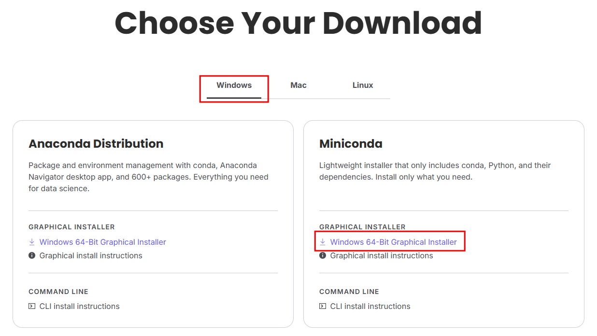
- Once downloaded, run the installer by double-clicking it. Click Next.
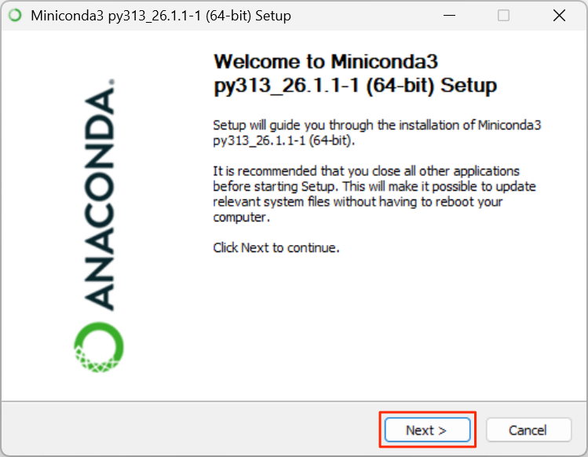
- Read the terms of conditions and click I Agree to accept them.
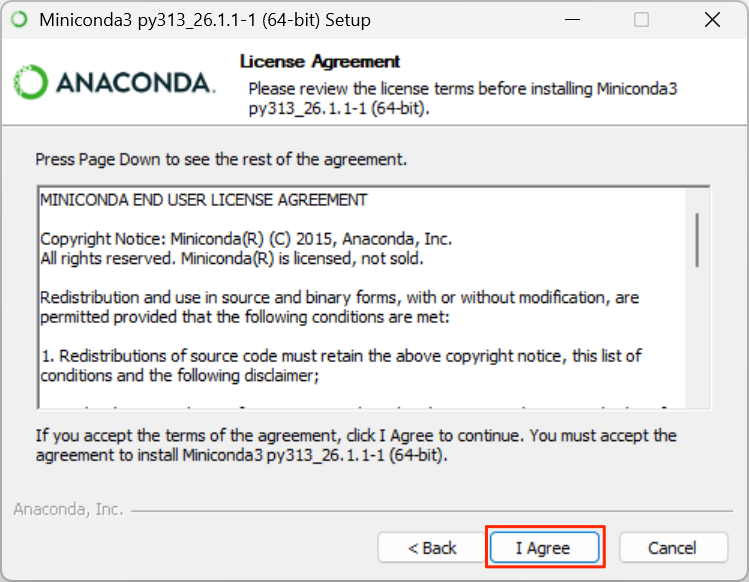
- Select Just Me (recommended) option for installation and click Next.
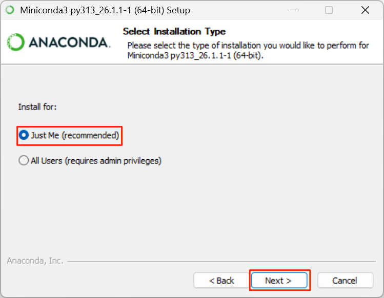
- For Choose Install Location, you can keep the the default suggested directory as the Destination Folder. Click Next
Note: If your username has spaces, or non-English characters, it can causes problems with some packages. In that case, you can install it to a path such as
C:\miniconda3.
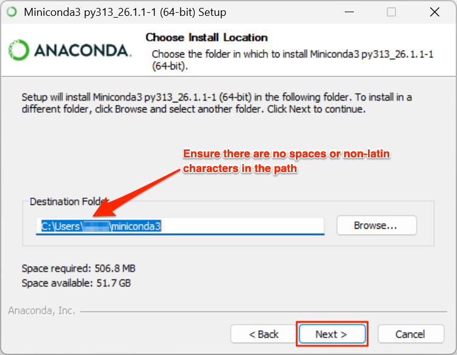
- Confirm the Advanced Installation Options and click Install.
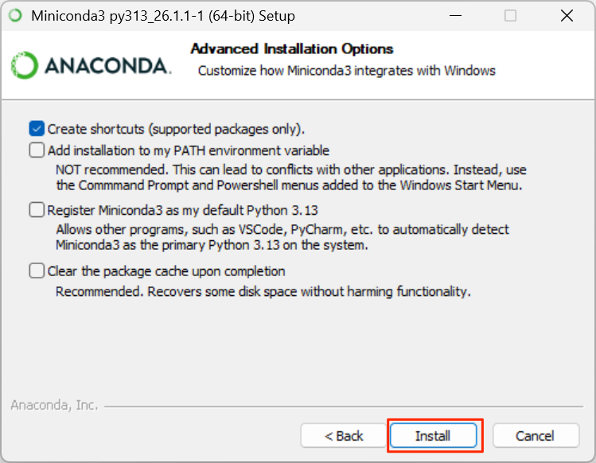
- Once the installation finishes, click Finish to exit the installer.
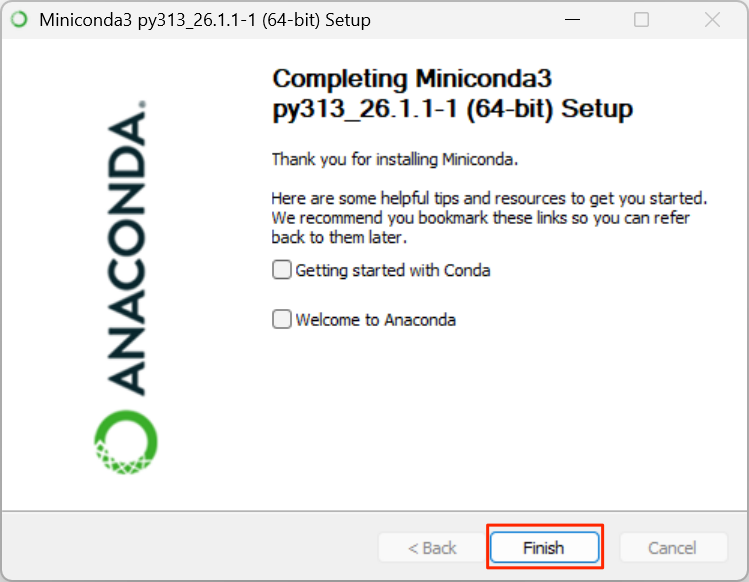
- Your installation is complete, but we need to verify it and configure a few settings. Open a new Anaconda Powershell Prompt from the Start Menu.
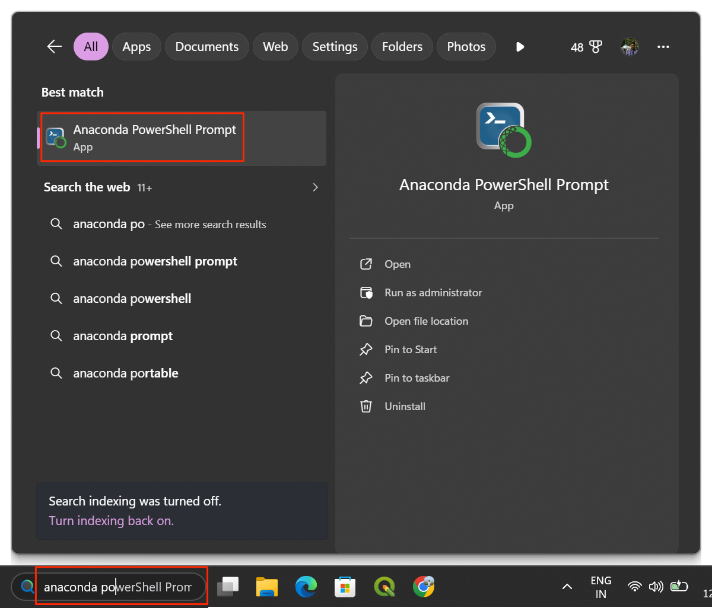
- A new Anaconda Powershell Prompt window will open and
display your
baseenvironment activated by default. Enter the following command which will initialize and configure conda to work with Powershell.
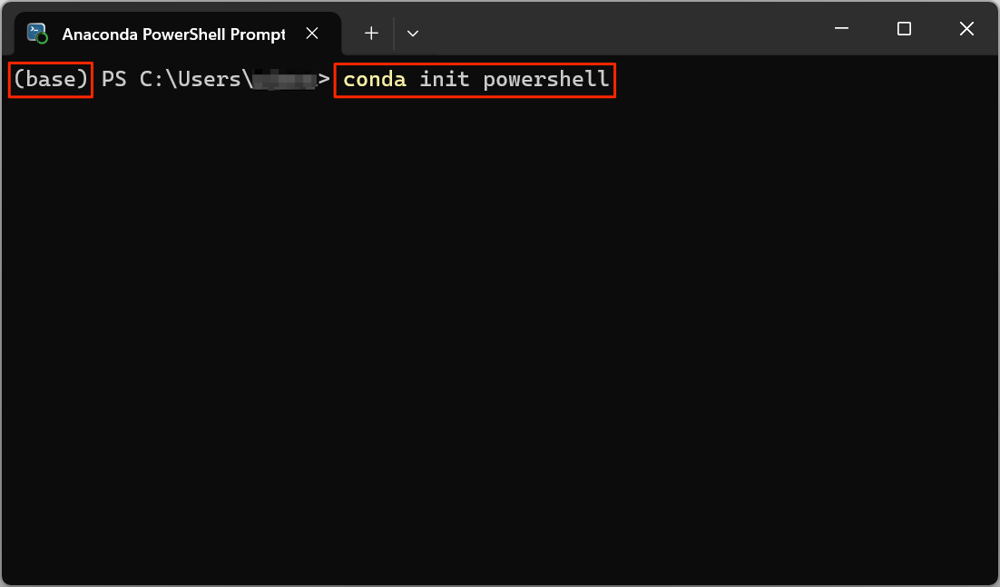
- Finally, run the following command to accept the Anaconda Terms of Service (ToS).
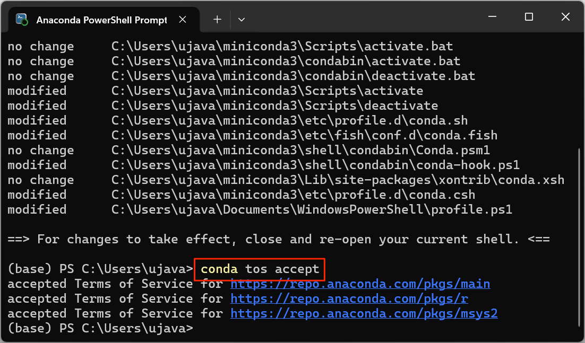
Your setup is now complete.
Install Miniconda on Mac
- Visit the Miniconda Download
page and then select the
64-bit (Apple silicon) Graphical Installerunder Miniconda. It will download a.pkginstaller.

- Once downloaded, run the installer by double-clicking it. Click Continue.

- Read the terms of conditions and click Agree to accept them.

- Confirm the install location and click Continue.

- Wait for the installer to finish and then click Close.

- Open a new Terminal window. If your installation was
successful, the terminal will start without any errors and will display
your
baseenvironment activated by default.

- Run the following command to accept the Anaconda Terms of Service (ToS).
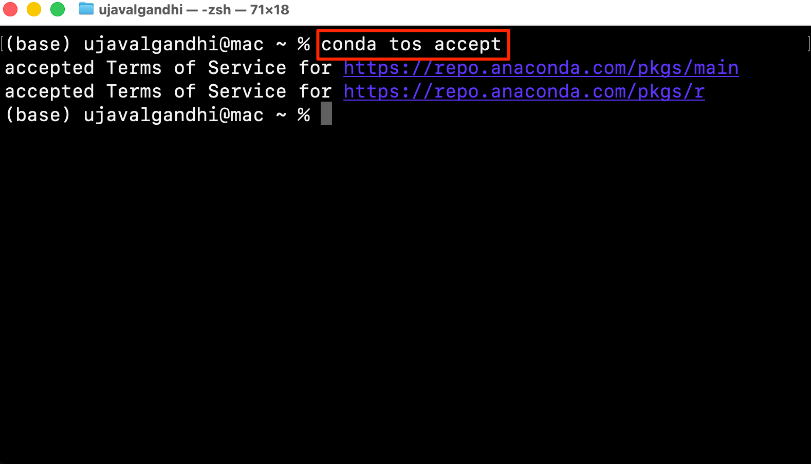
Your setup is now complete.
Install Miniconda on Linux
- Visit the Miniconda Download
page and then download the appropriate Linux installer under Miniconda.
Choose the
64-Bit (x86) Installerfor Intel based systems and64-Bit (AWS Graviton2 / ARM64) Installerfor systems with ARM processors.
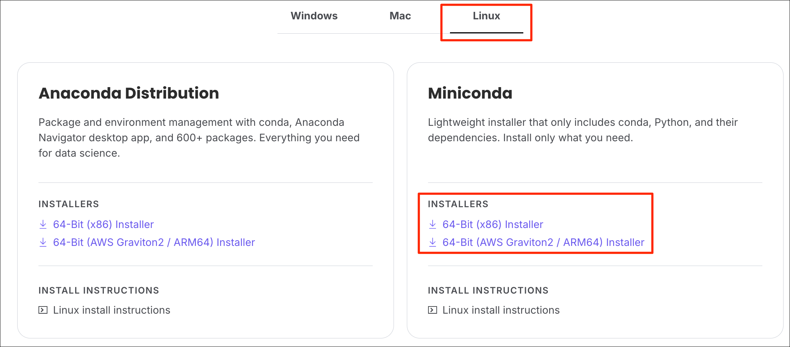
- Open a Terminal and
cdto the directory containing the downloaded file. Run the following command to start the installer. Pick the command for the installer you have downloaded.
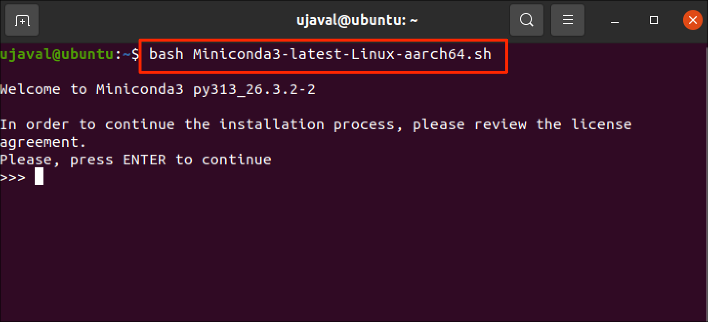
- Read the terms of conditions and type
yesto accept them.
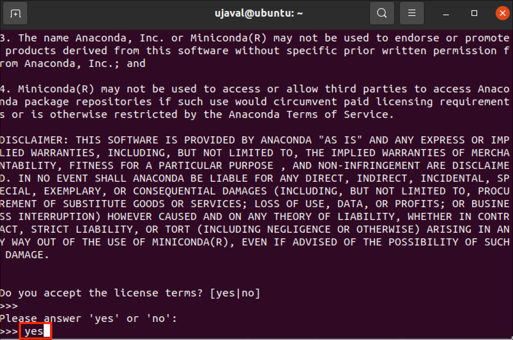
- Confirm the install location and press Enter.
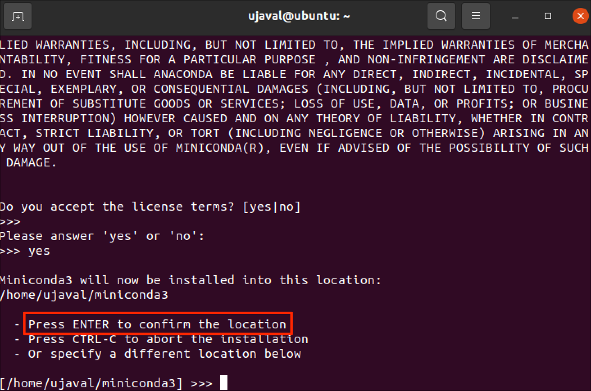
- Wait for the installer to finish and when prompted to Proceed
with initialization?, enter
yes.
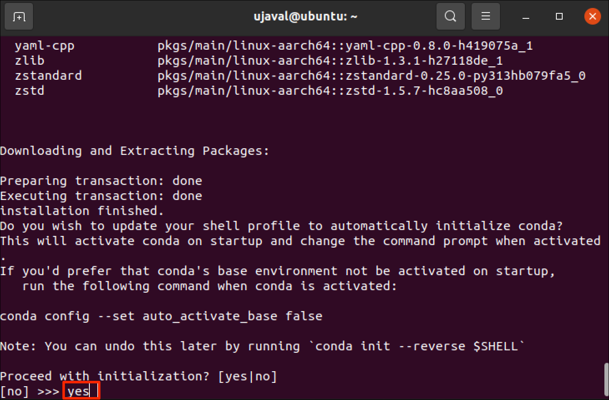
- Restart the Terminal for the changes to take effect. The terminal
will now display your
baseenvironment activated by default. Run the following command to accept the Anaconda Terms of Service (ToS).
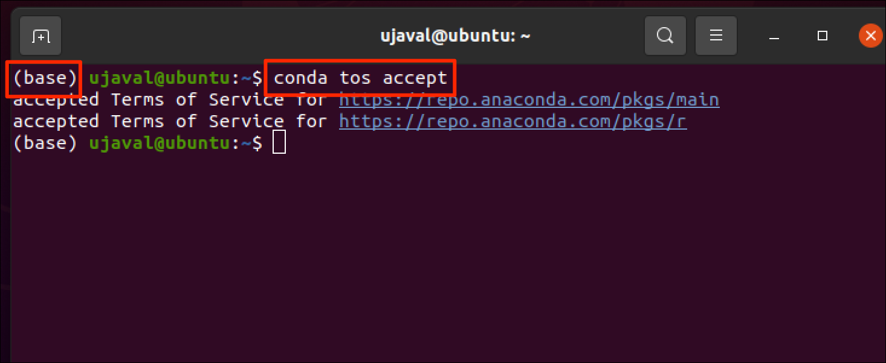
Your setup is now complete.
FAQs
Is Conda free?
Anaconda’s Terms of Service requires commercial entities with more than 200 employees purchase a license. Python ecosystem has many other package managers that are offered under more liberal licensing terms. Once you learn the basics of creating environments and installing packages using conda, you may consider switching to any of the following alternatives.
Can I use UV?
Working with Geospatial Python requires installing binary packages
such as GDAL - which are not supported by pure Python package
managers like pip or uv. You can read more
about Python
package managers which details all the options and their
tradeoffs.
If you want to report any issues with this page, please comment below.